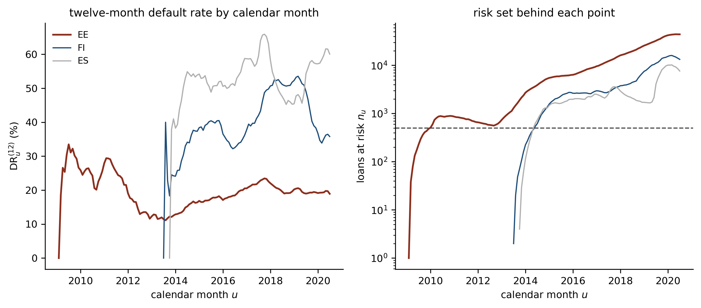

Credit Lecture R1: Point-in-Time PD and the IFRS 9 Term Structure
Deep Learning for Actuarial Modelling: a credit risk companion
Author
Mario Ervedosa
Published
September 2, 2026
Abstract
Credit lecture 1 defined a point-in-time PD in a callout and then admitted it could not fit one, because a twelve-month cross-section leaves vintage and calendar month collinear. This lecture takes the callout apart and rebuilds it. Two conditioning axes are doing the work and they are routinely confused: one runs from conditional to unconditional and asks whether the loan has survived to the start of the window, the other runs from point-in-time to through-the-cycle and asks what the macroeconomy is doing. Separating them gives a two-by-two map, and the map is what makes the rest legible: the term structure IFRS 9 needs, forward-looking information and the FiT PD it produces, the eleven ways the estimate is actually built and what each costs, and a demonstration on the Bondora book expanded to 2.7 million loan-months with real Eurostat series attached, where the collinearity lecture 1 complained about breaks and a macro coefficient is finally identified.
1 Where lecture 1 stopped
Credit lecture 1 put the point-in-time question inside a callout, gave it a formula, and then conceded that the portfolio in front of it could not answer the question. The concession was honest and it was also incomplete. What follows pays the debt: it separates the two things the word “conditional” is doing in this subject, builds the term structure IFRS 9 actually asks for, reviews the eleven ways practitioners build one, and then fits a macro coefficient on the Bondora book to show that the obstacle lecture 1 hit was a property of its table rather than of its portfolio.
Nothing here introduces notation for its own sake. Lecture 1 owns the monthly default flag \(y_{i,t}\), the worst-ever window flag \(D^{(k)}_{i,t}\), the origination month \(g_i\), the calendar identity \(u = g_i + t\), the macro state \(\boldsymbol{Z}_u\), the performing set \({\cal P}_u\) with size \(n_u\), and the portfolio default rate \(\mathrm{DR}^{(k)}_u\). Lecture S1 owns the discrete hazard \(q_{i,t}\) and the survival probability \({}_k p_{i,t}\). Consequently this lecture adds exactly one symbol, and section 2.2 is where it arrives.
NoteWhere this sits in the series
Lecture 1 defines the outcome and the twelve-month PD. Lecture S1 turns that outcome into a discrete-time hazard model and gets a term structure from it. Lecture S2 supplies the actuarial translation and the competing-risks correction. Lecture S3 puts a network where S1’s logistic regression sat.
This lecture is the regulatory reading of the same machinery, and it answers a different question from all four: given a term structure, what makes it point in time, and what does IFRS 9 do with it. Lecture R2 takes the other half of lecture 1’s callout, i.e. the hybrid PD, the long-run average and the capital formula, into the IRB world.
2 The two conditioning axes
The single most common confusion in this subject is that conditional and unconditional name one axis while point-in-time and through-the-cycle name another, and the two get collapsed into a single spectrum running from “prudent” to “responsive”. They are orthogonal. A PD can be conditional and through-the-cycle, or unconditional and point-in-time, and both combinations occur in production. Separating them takes one page and it makes the rest of the lecture legible, so it comes first.
2.1 The conditional PD is a hazard
Take lecture 1’s monthly flag \(y_{i,t}\), which is one where loan \(i\) breaches the default definition in month \(t\) of its life. Ask for the probability of that breach given that the loan reached month \(t\) still performing. That conditional probability is the discrete hazard, and lecture S1 writes it \(q_{i,t}\):
\[
q_{i,t}\left( \boldsymbol{X}_i, \boldsymbol{Z}_u \right)
= \mathbb{P}\left( y_{i,t} = 1 \,\middle|\, \text{performing at } t - 1,\;
\boldsymbol{X}_i,\; \boldsymbol{Z}_u \right) ,
\qquad u = g_i + t .
\]
Two indices appear and they must stay apart. The subscript \(t\) is months on book, so it carries the loan’s own age and nothing about the calendar. The macro state \(\boldsymbol{Z}_u\) is indexed by calendar month, and \(u = g_i + t\) is the identity that ties the two clocks together. A loan originated in March 2015 and observed at \(t = 24\) is being asked about March 2017, and a loan originated in March 2018 at the same \(t = 24\) is being asked about March 2020. Same loan age, entirely different economy.
This is the conditional PD, and it is conditional in the precise sense Mario’s own credit risk notation gives the word: the conditioning event is that the loan sits in the performing risk set. The guides’ notation table writes the general \(k\)-month version as \(\mathrm{PD}^{\rm PiT}_{i,t}(k) = P(D^*_{i,t}(k, p) = 1 \mid D_{i,t}(p) = 0, X)\), where \(D_{i,t}(p) = 0\) is exactly the statement that the loan has not defaulted. The hazard is that quantity at \(k = 1\).
2.2 Survival, the marginal PD and the cumulative PD
Three further quantities follow from the hazard by arithmetic, and lecture S1 derives them from Botha and Verster’s identities. Survival is a product of one minus the hazard,
the probability that loan \(i\), currently \(t\) months on book and performing, survives a further \(k\) months. Its complement is the cumulative PD to horizon \(k\), which is lecture 1’s \(\mathrm{PD}_k\) and needs no new symbol,
The one symbol this lecture adds is the marginal PD, i.e. the probability that the loan survives to the start of month \(t\) and then defaults during it, measured from origination:
\[
f_{i,t} = {}_{t-1} p_{i,0} \cdot q_{i,t} .
\]
That is Botha and Verster’s third identity, \(f(t_{(k)}) = S(t_{(k-1)}) \cdot h(t_{(k)})\), written with the subscripts this series uses. The letter is theirs too, so the notation is inherited rather than invented.
WarningThe two lectures agree, and here is the proof
Lecture 1’s window flag \(D^{(k)}_{i,t} = \max(y_{i,t+1}, \ldots, y_{i,t+k})\) is the worst-ever aggregation: it scores a one where the loan breaches at any point inside the window. A maximum of monthly flags is one exactly where the loan fails to survive the whole window, so for a loan performing at \(t\),
Lecture 1’s twelve-month PD is therefore this lecture’s cumulative PD at \(k = 12\), and lecture 1’s flag is the survival machinery in disguise. Setting \(t = 0\) recovers \(D^{(k)}_i\) and the lifetime PD is the same expression at \(k\) equal to the remaining term.
One caveat, and lecture S1 states it too. The identity holds because a defaulted loan leaves the risk set, which is what makes the worst-ever flag immune to a loan that breaches, cures and breaches again. Where redefaults are modelled explicitly, the product no longer captures the outcome and section 4.6 is the machinery that does.
Now the survival axis can be stated cleanly, because the difference between a conditional and an unconditional PD is whether the chance of getting to the window at all is inside the number or outside it. Conditional on performing at \(t\), the answer is \(1 - {}_k p_{i,t}\). Asked of a loan at origination with no conditioning on its survival to \(t\), the answer multiplies that by the survival probability,
which the guides’ table calls the unconditional PiT marginal PD and glosses as “regardless of prior default or prepayment”. The marginal PD \(f_{i,t}\) is the same construction at \(k = 1\). Hence the conditional number is always the larger of the two, and the gap between them is the survival probability, which on a book like Bondora is substantial: lecture S1 measures a cumulative default probability of 30.8 per cent by twelve months, so a third of the book is already out of the risk set before a second-year window opens.
Which one a bank wants depends on what the number is for. An expected credit loss on a performing loan is a conditional quantity, because the loan demonstrably survived to the reporting date. A portfolio-level loss forecast on a cohort is unconditional, because the cohort’s attrition has to be paid for somewhere. Confusing them double-counts survival or ignores it, and both errors are silent.
2.3 The macro axis is a different question
Everything so far held \(\boldsymbol{Z}_u\) fixed. The second axis asks what to do with it, and it has exactly two answers.
Conditioning on it gives a point-in-time PD, which is lecture 1’s \(\mathrm{PD}^{\rm PiT}_k(\boldsymbol{X}_i, \boldsymbol{Z}_u)\): the number moves as the economy moves, and IFRS 9 requires this because an expected credit loss is a forecast made from today’s conditions. Averaging over the distribution of the macro state instead gives a through-the-cycle PD,
which is what an IRB long-run average targets and what lecture R2 takes up. Note what the expectation runs over. It runs over the macro state alone, leaving survival untouched, which is why this axis and the previous one are independent.
The averaging has to happen on the model’s output rather than on its input, and section 3.2 gives the reason with a worked figure, because feeding average macroeconomic conditions into a fitted point-in-time model returns something that is not the through-the-cycle PD.
2.4 The map
Crossing the two axes gives four cells. The naming is the literature’s rather than this lecture’s, and one cell carries a warning.
NoteThe four cells, and the word that means two things
Conditional on survival to the window start
Unconditional, survival inside the number
Point in time, conditioned on \(\boldsymbol{Z}_u\)
\(\mathrm{PD}^{\rm PiT}_{i,t}(k) = 1 - {}_k p_{i,t}\), hazards at \(\boldsymbol{Z}_u\). The IFRS 9 quantity for a performing loan
Through the cycle, averaged over \(\boldsymbol{Z}\)
\(\mathrm{PD}^{\rm TTC}_k = \mathbb{E}_{\boldsymbol{Z}}[\cdot]\), and its estimator \(\overline{\mathrm{DR}}^{(12)}\). The IRB long-run average
Rarely quoted, and the cell where the ambiguity below lives
The warning. In Mario’s notation and in the survival literature, “unconditional” names the survival axis, as the top row shows. In the Vasicek and transition-matrix literature it names the macro axis: Belkin, Suchower and Forest (1998) derive their conditional migration probabilities from thresholds fixed by “the unconditional through-the-cycle transition matrix”, where unconditional means averaged over the cycle and says nothing about survival. A reader moving between a survival paper and a transition-matrix paper is therefore reading one word for two axes.
This lecture uses the survival reading throughout, following 03_notation.md. Where the macro reading is meant, the words are point in time and through the cycle, which are unambiguous.
That table is the map for the rest of the lecture. Section 3 works down the left column, from point in time to through the cycle and back again with a macro forecast attached. Section 4 asks which estimator fills the cells. Section 5 fills the top-left cell on real data.
2.5 What competing risks do to all four cells
One assumption sits under every formula above and it deserves naming before the lecture leans on it. Writing survival as \(\prod (1 - q_{i,t})\) treats default as the only way a loan can leave, so every other exit has to be handled as censoring. Bondora loans leave two ways, and the table is not close: 71,416 defaults against 42,144 settlements.
Treating settlement as censoring answers a latent question, i.e. what the default probability would be if nobody ever repaid early. That is a legitimate quantity, and an expected credit loss needs a different one, because a loan that repays cannot subsequently default and cannot carry a loss allowance either. The quantity IFRS 9 wants is the cumulative incidence of default in the presence of settlement, which is smaller, and lecture S2 fits the Fine-Gray subdistribution hazard that estimates it directly. Lecture S3 measures the gap on this book at 17.1 percentage points by sixty months.
The point for this lecture is that the competing-risks correction is orthogonal to both axes. It changes the level in every one of the four cells and it changes the ranking in none of them, so the map above survives intact. Consequently the demonstration in section 5 treats settlement as censoring, exactly as lecture S1 does, and carries the same caveat.
3 Macro conditioning, forward-looking information and the FiT PD
Section 2 held the macro state fixed and asked what conditioning on it meant. This section asks where the macro state comes from, which is a harder question, because the reporting date is the last month for which anybody has data and every month in the term structure after it has to be forecast.
3.1 What the standard actually requires
The requirement is worth reading rather than paraphrasing. IFRS 9 paragraph 5.5.17 obliges an entity to measure expected credit losses in a way that reflects
an unbiased and probability-weighted amount that is determined by evaluating a range of possible outcomes; (b) the time value of money; and (c) reasonable and supportable information that is available without undue cost or effort at the reporting date about past events, current conditions and forecasts of future economic conditions.
Three obligations sit in that sentence and each forces a piece of machinery. Probability weighting over a range of outcomes forces scenarios. The time value of money forces discounting, and therefore forces the loss to be dated, which is what makes a term structure unavoidable rather than a refinement. And “forecasts of future economic conditions” forces the macro conditioning this section is about.
The standard’s own name for the third of those is forward-looking information, universally abbreviated FLI, and the phrase recurs through the EBA’s guidelines and through every bank’s model documentation. Paragraph 5.5.18 sets a floor that is much lower than practice: an entity “need not necessarily identify every possible scenario”, but must reflect both the possibility that a credit loss occurs and the possibility that none does, “even if the possibility of a credit loss occurring is very low”. Two outcomes is the legal minimum and three is the industry norm.
Paragraph B5.5.52 is the one that names the variables. It requires that estimates of changes in expected credit losses
reflect, and be directionally consistent with, changes in related observable data from period to period (such as changes in unemployment rates, property prices, commodity prices, payment status or other factors that are indicative of credit losses …).
Unemployment is first on the standard’s own list, which is a convenient licence for the demonstration in section 5.
NoteFiT, and why this course uses a word the standard does not
A PD carrying forward-looking information is called a forward-in-time (FiT) PD in this course, sitting alongside PiT and TTC so that the three read as one family with one axis between them. The label is Mario’s, from his credit risk notation, and it is worth being straight about its provenance: the term appears nowhere in IFRS 9, nowhere in the EBA guidelines and nowhere in the literature this series cites. A case-sensitive search of the research corpus behind these lectures returns no usage of it as a PD label.
It survives here for one reason. The distinction it marks is real and the standard’s own vocabulary obscures it, because a PiT PD conditioned on the macro state as observed at the reporting date and a PiT PD conditioned on a forecast path for that state are different objects with different error properties, and calling both of them point in time hides that. So the lecture uses FiT for the second, and states the standard’s own wording first so a reader can find the same material in a bank’s documentation, where it will be filed under FLI.
3.2 Two ways to put the macroeconomy in, and only one of them is closed
Conditioning a PD on the macroeconomy admits two constructions, and practitioners use both, often in the same model stack.
The direct route puts \(\boldsymbol{Z}_u\) inside the hazard as a covariate block, which is what Botha and Verster’s specification does with its portfolio-level time-varying term \(\boldsymbol{x}(t)\), and what Bellotti and Crook (2009) did in continuous time before them. The macro state then enters the linear predictor, the coefficient is estimated from history, and a forecast path for \(\boldsymbol{Z}\) produces a forecast term structure by substitution. Section 5 fits exactly this.
The scaling route fits a point-in-time PD without macro variables, then multiplies it by a scenario factor derived from a separate regression of the historical default rate series on macro predictors. The guides’ notation writes it
and this is what most production IFRS 9 stacks actually run, because it separates the ranking model from the macro model and lets each be governed by a different team.
WarningThe scaling route is not closed on [0, 1], so the series takes the probit form
A multiplier on a probability leaves the unit interval. A downside factor of 1.4 applied to a point-in-time PD of 80 per cent returns 112 per cent, which is not a probability. On a low-PD book the breach never happens and the shortcut is harmless; on the distressed tail of a retail portfolio it happens routinely, and the usual repair is to cap at one, which silently flattens exactly the exposures the downside scenario was built to stress.
The construction that stays closed puts the factor inside a probit instead. Writing \(Z_u\) for the systematic factor and \(\rho\) for the loan’s loading on it,
which is Vasicek’s conditional default probability, lecture 1’s hybrid PD, and the same expression the IRB capital formula evaluates in the tail of the factor distribution. It is bounded by construction, it reduces to the through-the-cycle PD at \(\rho = 0\), and it averages back to the through-the-cycle PD exactly, which the scaling route does not.
This series adopts the probit form as the definition of a FiT PD and treats the multiplicative factor as the practitioner shortcut it is. The guides’ notation carries both, which is a genuine ambiguity in the source rather than a misreading, and the reason for choosing this way round is that the guides’ own FLI methodology derives \(\mathrm{FLI}_u\) as a ratio of two fitted PDs, i.e. as an output of the scenario regression. An output cannot also be the primitive that enters a probit as a factor realisation.
One sign convention to carry between documents. Lecture 1 and this lecture write \(-\sqrt{\rho}\, Z_u\) with high \(Z_u\) benign, following Vasicek. The guides write \(+\sqrt{\rho}\, \mathrm{FLI}_u\). The two agree under
\[
\mathrm{FLI}_u = -Z_u ,
\]
and a reader checking one formula against the other without that mapping will conclude that one of them has a sign error.
WarningAveraging happens on the output, and Jensen says why
This trap is where the calculation goes wrong in practice, and it applies to both routes above. A through-the-cycle PD is an average of point-in-time PDs, so the averaging has to happen downstream of the model, on its output. For a logistic point-in-time model with linear predictor \(\eta\), Jensen’s inequality gives \(\mathbb{E}[\sigma(\eta)] \ne \sigma(\mathbb{E}[\eta])\), so feeding mean macroeconomic conditions into a fitted point-in-time model returns a number that is not the through-the-cycle PD, and the discrepancy grows with the curvature of the link over the range the cycle covers.
The probit form makes the size of the error concrete rather than abstract. Setting \(Z_u\) to its mean of zero gives \(\Phi\left( \Phi^{-1}(\mathrm{PD}^{\rm TTC}_k) / \sqrt{1 - \rho} \right)\), which understates the through-the-cycle PD whenever that PD sits below one half. At a through-the-cycle PD of 3 per cent and \(\rho = 0.15\) it returns 2.07 per cent, a shortfall of nearly a third. The same model gives the right answer when the average is taken over its output, by the identity \(\mathbb{E}\left[ \Phi(a - bZ) \right] = \Phi\left( a / \sqrt{1 + b^2} \right)\).
The regulatory through-the-cycle estimator sidesteps the whole issue by averaging observed rates rather than model outputs, grade by grade and at \(k = 12\),
over a historical window \(U\) of calendar months. Article 180 of the Capital Requirements Regulation is what forces \(U\) to contain bad years as well as good ones, since it requires the long-run average to rest on a period covering the likely range of variability, and the EBA’s guidelines on PD estimation (EBA/GL/2017/16) hold the mechanics. Lecture R2 takes that estimator up properly.
3.3 The expected credit loss this serves
The term structure exists to be summed into a provision, and writing the sum down shows which of section 2’s quantities the accounting actually consumes.
For a loan performing at the reporting date, with \(t\) running over the months of remaining life from that date, scenario \(s\) carrying probability \(\pi_s\), and \(r_i\) the effective interest rate,
The weight on each period is the marginal PD, i.e. the one symbol section 2.2 added, and that is the whole reason it earns a symbol. A cumulative PD cannot appear in this sum, because a loss has to be dated before it can be discounted, and a hazard cannot appear either, because it is conditional on a survival the sum has already spent. Here \(f^{(s)}_{i,t}\) is measured from the reporting date rather than from origination, so its survival factor is \({}_{t-1} p_{i,t_0}\) with \(t_0\) the loan’s age when the provision is struck.
Two facts about that formula matter more than its algebra. The horizon \(T_i\) is twelve months for a Stage 1 exposure and the full remaining life for Stage 2 and Stage 3, so the staging test decides how much of the term structure gets used, and a loan can move between the two on a change in PD alone. And the scenario weights \(\pi_s\) are judgemental. The EBA’s 2023 monitoring report found an average baseline weight of about 57 per cent across 37 EU institutions, downside around 27 and upside around 17, with wide dispersion and limited evidence that severity and probability had been jointly calibrated. Consequently a term structure estimated to three decimal places is weighted by numbers chosen in a committee, and a modeller should know where the uncertainty actually lives.
3.4 Two or three cycles against dozens of indicators
The forward-looking regression is the weakest link in the chain and the reason is structural. Monthly or quarterly default history covering two or three economic cycles gives a modeller somewhere between 10 and 30 usable observations at the portfolio level, against a candidate set of macroeconomic indicators that runs into the dozens once lags and transformations are counted. Selecting one predictor from that set by stepwise search or by an information criterion will always succeed, and the model it returns is fitted to the noise.
Djurovic (2025) sets out eight principles a well-specified FLI model should satisfy, among them economic plausibility, directional constraints, parsimony and calibration stability, and names three enhancements over naive selection. Model averaging across a set of plausible specifications, rather than committing to the winner of a search. Blockwise design, which groups candidate predictors by economic theme so that the choice is made between themes rather than between collinear members of one. And sign-constrained regression, which enforces the direction economics already knows, so that a fitted model cannot claim that rising unemployment lowers default risk.
Two further findings from the same series belong in any validation of this step. In a dynamic regression of the form ARIMA(1,0,0), which is common in FLI work, the autoregressive coefficient is heavily downward-biased at sample sizes of 10 to 30 while the predictor coefficient stays largely unbiased, so a validator should treat the AR term with suspicion and ask the developer for simulation evidence that it can be estimated at all. Separately, the Augmented Dickey-Fuller test loses power precipitously at those sample sizes: at \(n = 20\) it frequently fails to reject a non-stationary null on a genuinely stationary series, so a non-rejection is weak evidence and treating it as proof of non-stationarity inverts the inference.
3.5 Age, period and cohort: how the collinearity breaks
Lecture 1 raised an objection to the whole enterprise and it was a good one. Conditional on months on book \(t\), the vintage \(g_i\) and the calendar month \(u\) satisfy \(u = g_i + t\) identically, so any two of the three determine the third. Lecture 1’s vintage figure runs the default rate from 7 per cent in the 2012 cohort to 37 per cent in 2017, and two stories fit that equally well: Bondora loosened its underwriting, or those cohorts lived through a worse environment. Lecture 1 concluded that more modelling would not separate them.
That conclusion is right about a single cross-section and wrong as a general claim, and the reason is worth stating precisely. The identity binds within a loan, and identification comes from across loans. In a panel, a given calendar month \(u\) is observed at many different loan ages \(t\), because loans originated at different times reach it at different points of their lives, and a given loan age is observed in many different calendar months. Once both hold, the age effect and the environment effect are separately identified, and section 5 shows that Bondora expanded to person-periods satisfies both.
Breeden (2016) is the framework that formalises this. An age-period-cohort decomposition writes the outcome as three separable offsets, the lifecycle in loan age, the vintage quality of the origination cohort, and the environment at the observation date, then embeds all three into a GLM scorecard as additional predictors, which keeps the interpretability a validator needs and produces a PD conditioned on both loan age and the economy. On a US auto book the augmented scorecard holds its rank-ordering out of time where a plain scorecard decays.
Breeden’s answer to the residual identification problem deserves scrutiny rather than applause. It is augmented macroeconomic history: anchor the environment sensitivity to an external series spanning several cycles, longer than the portfolio’s own history, then back-project onto the portfolio’s vintages. That stabilises coefficients which would otherwise be confounded on a short book, and it does so by importing a sensitivity estimated somewhere else. Whether that sensitivity transfers is an assumption, it is untestable on internal data by construction, and it arrives dressed as a data preparation step, which is where a validator should look hardest.
4 How the estimate is actually produced
Eleven methods produce a point-in-time term structure and no two of them answer quite the same question. What follows gives each its estimator, then what it buys, then what it costs, because a review that lists only the advantages is a sales document. The order runs roughly from the loan-level survival family, through the portfolio-level transition family, to the two techniques an actuarial reader already owns from reserving.
Three of the eleven are already fitted elsewhere in this series, so this section states their place in the taxonomy and points at the lecture that does the work.
4.1 The discrete-time hazard model
One row per loan-month at risk, a binary response flagging the month of default, and a logistic regression on the result whose period indicators form the baseline hazard. Botha and Verster (2025) specify it with four covariate blocks,
where \(\boldsymbol{E}_{i,t}\) holds the period indicators, so the model carries no separate intercept, and the four blocks are the baseline, time-fixed covariates, spell-level time-varying covariates and portfolio-level time-varying covariates. The last block is where the macroeconomy lives, and \(\boldsymbol{\delta}\) is the coefficient section 5 fits.
What it buys. Every horizon from one fit, since chaining the hazards gives \(\mathrm{PD}_k\) at any \(k\) without refitting. Native macro conditioning through \(\boldsymbol{\delta}\), so a scenario path substitutes directly into the linear predictor. Loan-level heterogeneity through \(\boldsymbol{\beta}\). And no new estimation machinery whatever, because the person-period layout turns the hazard into the mean of a binary response, so anything that maximises a binomial likelihood fits it, up to and including the network of lecture S3.
What it costs. The expansion. Bondora’s 179,235 loans become 2,672,193 rows at a sixty-month cap, and the exposure convention inside that expansion is a modelling choice rather than a formatting one: lecture S2 measures the person-period denominator running 3.5 per cent above the exposure the loans actually lived, because a loan exiting mid-month contributes a whole row. Competing risks are handled by how the table is built rather than by the estimator, so treating settlement as censoring is a decision the layout conceals. And the baseline needs banding wherever a month carries no defaults, since a saturated period indicator on an empty cell is not identified.
Verdict: the default choice, and the spine of this lecture. It is the only method here that delivers a loan-level term structure and native macro conditioning from a single model. Lecture S1 fits it on Bondora and lecture S3 replaces its logistic link with a network.
4.2 Markov chains and the two assumptions they need
Loans occupy delinquency states rather than a binary performing flag, and a transition matrix governs migration between them. Taking the guides’ five-state space, i.e. performing \(P\), under-performing \(U\), defaulted \(D\), settled \(S\) and written off \(W\), with the last two absorbing, the chain is governed by
and the twelve-month PD is the \(D\) element of \(v_{12}\), with the lifetime PD the same element of \(v_n\).
What it buys. A PD at any horizon from one matrix, trivially. A forecast of the entire future portfolio profile rather than of default alone, so the same object answers “what share of today’s book is in arrears in a year” for budgeting and stress testing. And the state space makes competing risks explicit, since settlement and write-off are states rather than a censoring convention, which is the honest reason to teach the method even where nobody ships it.
What it costs. Two assumptions, both empirically rejected. Botha, Verster and Breedt (2025) reject stationarity of the matrix and homogeneity of the population, and the guides add a third piece of the same evidence: observed sojourn times are heavily right-skewed and visibly not exponential, which the Markov property requires. Repairing the fit means time-specific matrices, which makes the model complex for little gain over estimating the term structure directly. And small monthly migration errors compound: a matrix raised to the sixtieth power turns a rounding error into a materially wrong lifetime PD.
Verdict: keep it as the baseline every richer method is measured against, and do not ship it. Its value here is that the next two methods are each a repair to one of its two assumptions.
4.3 Beta regression on the transition cells
The repair for non-stationarity. Each cell of the matrix becomes a time series over calendar months, \(p_{ml}(u) = n_{ml}(u) / n_m(u)\), and each series is modelled by a beta regression with variable dispersion, so both the mean \(\mu_{ml}(u)\) and the precision are parameterised on inputs including the macro state:
What it buys. Macro conditioning at portfolio level, directly and per transition type, in a distribution that respects the \([0,1]\) support of a proportion instead of pretending a rate is Gaussian. Modelling the dispersion as well as the mean matters for a cell whose volatility itself moves with the cycle.
What it costs. The unit of observation is a cell, so the model cannot see a loan and the homogeneity assumption survives untouched. One fit per transition type of interest means a proliferation of models with no joint constraint keeping a row of the matrix summing to one, so the fitted matrix has to be renormalised and the renormalisation is arbitrary.
Verdict: a genuine improvement on the plain chain, and a halfway house. Botha, Verster and Breedt place it second of their three.
4.4 Multinomial logistic regression on the transitions
The repair for heterogeneity, and the same transition problem moved to loan level. With a baseline destination category \(J'\),
fitted once per non-absorbing starting state, so on the five-state space that means two models, for \(m \in \{P, D\}\). Time-fixed, spell-level time-varying and portfolio-level inputs all enter, exactly as in the hazard model.
What it buys. Heterogeneity and joint estimation together. The destination probabilities from one state are estimated as a single softmax, so a row of the matrix sums to one by construction rather than by renormalisation, and Botha, Verster and Breedt attribute the method’s win precisely to that joint modelling rather than to cell-by-cell fits. Redefaults and cures come free, because \(D\) is a transient state with an outward transition to \(P\) rather than an absorbing one.
What it costs. Parameters, \((J-1)(p+1)\) of them per starting state, so the design needs volume. More importantly it needs the delinquency state observed monthly for every account, which is strictly more data than a hazard model on time to first default requires, and it is the requirement Bondora fails. Interpretation also gets harder: there is no single coefficient to point at when a validator asks what a one-point rise in unemployment does to the twelve-month PD, because the answer runs through a matrix product.
Verdict: the best of the three multistate techniques on the published evidence, and the right choice where the bank wants stage migration rather than default alone. It answers IFRS 9 staging and lifetime PD from one model, which is an operational argument the hazard model cannot make.
4.5 Cox regression with time-varying macro covariates
The continuous-time ancestor of the whole family. Bellotti and Crook (2009) fit a proportional hazards model in which each macroeconomic series enters at the value it took in the month of default or censoring,
with \(h_0\) a nonparametric baseline estimated from the data by partial likelihood.
What it buys. The empirical case for macro conditioning itself, which this method established. On over 100,000 UK credit card accounts opened between 1997 and 2005, adding seven macroeconomic series lifted the log-likelihood ratio statistic by 1,779 on 25 degrees of freedom, and on an independent 2002 to 2005 test set the macro-augmented model achieved significantly lower misclassification cost than both logistic regression and a Cox model without the macro block. Interest rate dominated, with a standardised marginal effect of 0.261, nearly three times that of earnings, the next most important, which is consistent with the direct mechanical effect of rates on a monthly repayment. Every sign matched prior economic expectation except production. Furthermore, the paper’s practical payoff is exactly the substitution IFRS 9 needs: replace the historical macro series with a scenario forecast and the model produces stressed default probabilities without refitting.
What it costs. Proportional hazards, which asserts that a covariate multiplies the hazard by a constant at every loan age, so a characteristic whose effect fades as a book seasons is misspecified. A baseline left unparameterised, which is elegant in a clinical trial and awkward for an IFRS 9 lifetime PD, since extrapolating beyond the observed follow-up needs a functional form the method deliberately avoids. And a continuous-time apparatus imposed on data that arrive monthly, which buys nothing when every event time is already tied at a month boundary.
Verdict: cite it for the argument, fit the discrete-time version. In monthly data the discrete hazard is the same model with a tractable likelihood, an interpretable banded baseline and a covariate structure a validator can read, which is why the Botha tutorial builds on the discrete form.
4.6 Recurrent events: Andersen-Gill and Prentice-Williams-Peterson
Everything above treats default as the end of the story, and a retail book says otherwise. A loan may default, cure, and default again, and both §36.74 of the Basel framework and Article 178(5) of the Capital Requirements Regulation acknowledge default as a state a loan can leave. A time-to-first-default model discards every observation after the first event, which throws away the history of exactly the accounts a lender most wants to understand.
Botha, Verster and Scheepers (2025) compare two Cox extensions that keep it, in their section 2, “Different types of recurrent event survival models”. The Andersen-Gill model assumes a common baseline hazard across all spells and measures time on one calendar scale, so a cured loan simply resumes contributing at-risk time. The Prentice-Williams-Peterson gap-time model stratifies by spell number, giving each spell its own baseline hazard and permitting spell-specific covariate effects, and resets the clock to zero at the start of every new spell.
What Andersen-Gill buys is simplicity: one baseline, one set of coefficients, and redefaults included at almost no modelling cost. What it costs is the assumption doing the work, since one baseline for every spell asserts that the risk of a second default behaves like the risk of a first, which retail experience contradicts.
What Prentice-Williams-Peterson buys is the right shape for retail lending, because a redefault genuinely is a different event and the gap-time clock matches how a cured account is managed in practice. What it costs is data, since spell-stratified baselines need enough second and third spells to estimate, and the portfolio-level term structure now requires aggregating spell-level marginals back to the loan.
Verdict: PWP is the theoretically right recurrent-event choice and Andersen-Gill is dominated, though the honest note is what the comparison shows. Time-to-first-default and PWP produce broadly similar discriminatory performance, measured by Harrell’s c-statistic and by time-dependent ROC analysis, while Andersen-Gill underperforms both. Consequently the recurrent-event machinery buys correctness of the estimand rather than discrimination, and it is worth the complexity where redefaults are material to the loss and not otherwise.
4.7 Vasicek Z-factor scaling of a through-the-cycle grade PD
The route from an existing IRB model to a point-in-time number, and section 3.2’s probit form read as an estimator. Take a through-the-cycle grade PD, push it through
and the only unknown is the factor realisation \(Z_u\). Belkin, Suchower and Forest (1998) showed that it need not stay latent: for each observed year, compute the model-implied transition matrix at a trial \(Z\), minimise its distance from the observed matrix, and take the minimiser as that year’s realisation. The recovered series turns negative in downturns such as the early 1990s recession and positive in expansions, which is the evidence that it measures the cycle rather than noise. Djurovic (2025) improves the recovery by fitting one \(Z\) to the whole matrix in a single weighted least-squares problem rather than grade by grade, removing the inconsistency of different grades implying different values of the same common factor.
What it buys. A point-in-time PD from a through-the-cycle model with nothing refitted, in closed form, at negligible computational cost. Exact averaging, since \(\mathbb{E}_Z[\mathrm{PD}^{\rm PiT}] = \mathrm{PD}^{\rm TTC}\) holds identically, which no other method here gives for free. And an institution that already maintains annual transition matrices can run the estimation on data it has.
What it costs.\(Z_u\) is a recovery rather than a forecast. It is estimated from realised transitions, so projecting a point-in-time PD forward still needs a separate model linking \(Z\) to macroeconomic variables, which puts the FLI design problem of section 3.4 straight back in the path. The loading \(\rho\) is either prescribed by regulation, in which case it was not fitted to this portfolio, or estimated, in which case it comes with wide uncertainty. And the method scales a level while saying nothing about loan age.
Verdict: the right tool for converting an existing IRB grade PD to a point-in-time one, and the wrong tool for a term structure. An IFRS 9 term structure is a statement about how risk runs with loan age, and this method has no loan-age dimension at all.
4.8 The age-period-cohort decomposition
Section 3.5 gave the argument; this is the estimator. Breeden (2016) writes the loan-level outcome as three separable offsets and embeds them in a GLM scorecard,
with the environment term anchored to an external macro series spanning several cycles and back-projected onto the portfolio’s vintages.
What it buys. The collinearity break, explicitly and by construction rather than incidentally. A named, traceable macro coefficient a validator can challenge, which is a governance argument that beats a more accurate black box in practice. Reported stability of rank-ordering out of time on a US auto book where a plain scorecard decays. And a form that drops into an existing scorecard stack, so the bank keeps its infrastructure.
What it costs. The external series, and the assumption that the sensitivity estimated on it transfers to this portfolio. That assumption is untestable on internal data by construction, and it arrives dressed as a data preparation step rather than as a modelling choice, which is where it escapes scrutiny.
Verdict: the cleanest answer to lecture 1’s collinearity complaint, and the one method here whose key step cannot be validated on internal data alone.
4.9 Two methods an actuary already owns
The guides’ PD methodology carries two techniques that an actuarial audience knows from reserving rather than from credit, and both are in wide production use, so a review that omitted them would misdescribe the field.
Empirical term structures. Read the marginal and cumulative PDs straight off a defaults table with no model at all. With \(d_{k,t}\) the accounts performing at observation month \(M_k\) that defaulted in the period \((t-1, t]\), and \(n_{k,0}\) the performing count at \(M_k\),
then average over the most recent \(R\) observation months. What it buys is intuitiveness, no forecasting step, and native treatment of attrition and redefaults, so a lifetime PD may exceed 100 per cent for a high-risk account, which the method intends rather than tolerates. It also makes the point-in-time axis a single tunable parameter, which is the reason it belongs in this lecture: a short reference period \(R\) gives a point-in-time estimate with unwanted volatility, and an \(R\) spanning a full cycle gives a through-the-cycle one. What it costs is that the whole model is the segment definition, and granular segments run out of defaults, so the estimates’ quality rests entirely on a judgement the method itself gives no help with. Verdict: worth knowing because it is what many production stacks actually run, and because it exposes the PiT-to-TTC axis as a dial.
Run-off triangles and the chain ladder. The reserving triangle applied to defaults and closures instead of claims, with the chain ladder projecting the incomplete diagonals. Mario’s methodology cites Braun (2004) for the triangle and England and Verrall (2002) for the chain ladder, which is the same British Actuarial Journal paper an actuarial reader met in a reserving course. What it buys is ease of design and automation, and point-in-time estimates that predict the near future well. What it costs is that account-level term structures then need crude linear scaling of a segment-level curve, which fits badly, and that recent structural change in the portfolio distorts the triangle in ways that are correctable only if somebody notices. Verdict: include it for one reason, that an actuarial audience already owns the technique and can therefore see immediately what a credit term structure is.
Four further methods in that file are out of scope here, since none is a Botha method and none bears on the point-in-time question: ARIMA on the default rate series, Lorenz curve calibration, gradient-boosted direct PD prediction, and market-implied PDs from credit spreads.
4.10 The comparison
The columns are the questions that decide which method a portfolio can support. “Macro native” asks whether the macro state enters the estimator itself or has to be bolted on afterwards. “Recurrent” asks whether a loan may default twice. “Competing risks” asks whether settlement and write-off are modelled or assumed away.
Eleven methods for a point-in-time PD term structure, on the dimensions that decide which one a portfolio can support. Compiled from Botha and Verster (2025), Botha, Verster and Breedt (2025), Botha, Verster and Scheepers (2025), Bellotti and Crook (2009), Belkin, Suchower and Forest (1998), Breeden (2016) and Mario’s IFRS 9 PD methodology. “By data construction” means the estimator itself is silent and the treatment is decided when the table is built.
Method
Unit of observation
Macro native
Competing risks
Recurrent defaults
Data demanded
Discrete-time hazard
loan-month
yes, \(\boldsymbol{Z}_u\) block
by data construction
no, first default only
monthly at-risk history, one row per loan-month
Markov chain
portfolio, state pair
no
yes, as absorbing states
yes
monthly delinquency state per account
Beta regression on cells
transition cell by month
yes, per cell
yes, as states
yes
the same, aggregated to cell time series
Multinomial logistic
loan-month, state pair
yes
yes, as states
yes
monthly delinquency state per account
Cox with macro covariates
loan, continuous time
yes
by censoring
no
event times plus a dated macro series
Andersen-Gill
loan-spell, calendar clock
yes
by censoring
yes, common baseline
spell history per loan
Prentice-Williams-Peterson
loan-spell, gap clock
yes
by censoring
yes, spell-stratified
spell history, enough second spells
Vasicek \(Z\)-factor scaling
rating grade by year
via a separate \(Z\) model
no
no
annual transition matrices, a TTC PD, a \(\rho\)
Age-period-cohort
loan-month
yes, plus an external series
by censoring
no
monthly history and a longer external macro history
Empirical term structure
observation-month cohort
no, through \(R\) only
yes, attrition native
yes
a defaults table by cohort and horizon
Run-off triangle, chain ladder
segment by development month
no
yes, closures native
yes
a triangle of defaults and closures
Two performance orderings are established in the literature and both are worth carrying, with the attribution stated so a reader can check them.
On the multistate family, Botha, Verster and Breedt (2025) report that each successive model outperforms the previous on residential mortgage data, so multinomial logistic regression beats beta regression, which beats a plain Markov chain, and they attribute the ordering to joint rather than per-cell modelling of the transition probabilities. Their section 3, “Three models for deriving lifetime PD-estimates”, carries both the models and the comparison.
On the recurrent-event family, Botha, Verster and Scheepers (2025) report that time-to-first-default and Prentice-Williams-Peterson perform comparably while Andersen-Gill underperforms, measured by Harrell’s c-statistic and time-dependent ROC analysis. The section map in this repository’s source registration for that paper does not cover its empirical results, so the attribution here names the paper and the two diagnostics rather than a section number, which is the honest form of the citation.
Both orderings come with the same caveat, and it is the caveat that matters most for anyone choosing a method on this basis. Each was measured on one portfolio, and neither paper claims the ordering transfers. A method’s fit is a property of the book it was fitted to.
5 The demonstration on Bondora
Lecture 1 said this portfolio could not yield a point-in-time PD. This section shows that the obstacle was the shape of lecture 1’s table rather than a property of the book, fits a macro coefficient, and then finds a second obstacle that the first three sections predicted.
import numpy as npimport polars as plimport pandas as pdimport matplotlib.pyplot as pltimport statsmodels.api as smimport statsmodels.formula.api as smffrom scipy import stats as spsplt.rcParams.update({"figure.figsize": (9, 4), "figure.dpi": 150, "font.size": 9,"axes.spines.top": False, "axes.spines.right": False,})OX, GREY, RULE, BLUE ="#8C2F1E", "#B0B0B0", "#444444", "#1F4E79"surv = pl.read_parquet("../data/bondora_survival.parquet")macro = pl.read_csv("data/macro_eurostat.csv", comment_prefix="#")HORIZON =60COUNTRIES = ["EE", "FI", "ES"]SNAPSHOT =2021*12+7-1# July 2021, the extract dateMONTHS = np.arange(1, HORIZON +1)def as_month(u):"""Calendar month index back to a YYYY-MM label."""returnf"{u //12}-{u %12+1:02d}"macro = (macro .with_columns(u=(pl.col("month").str.slice(0, 4).cast(pl.Int32) *12+ pl.col("month").str.slice(5, 2).cast(pl.Int32) -1)) .rename({"country": "Country"}))print(f"{surv.height:,} loans; macro covers {macro['month'].min()} to {macro['month'].max()}")
179,235 loans; macro covers 2009-01 to 2026-07
5.1 The person-period expansion, indexed by calendar month
The expansion is lecture S1’s, unchanged, because a silent difference in the exposure convention would make the two lectures disagree about the same book. The one addition is the calendar month, and it is the identity of section 2.1 rather than a new column of data.
def person_period(df, horizon=HORIZON):"""S1's expansion: one row per loan-month at risk, plus the calendar month u."""return ( df.with_columns(n_periods=pl.min_horizontal(pl.col("t_obs_m"), pl.lit(horizon))) .with_columns(t=pl.int_ranges(1, pl.col("n_periods") +1)) .explode("t") .with_columns( y=((pl.col("t") == pl.col("t_obs_m"))& (pl.col("exit_kind") =="default")).cast(pl.Int8),# u = g_i + t, with g_i the origination month as a month index u=(pl.col("LoanDate").dt.year() *12+ pl.col("LoanDate").dt.month() -1+ pl.col("t")), ) )pp = person_period(surv)print(f"{surv.height:,} loans become {pp.height:,} loan-months, {pp['y'].sum():,} events")print(f"calendar months u run {as_month(pp['u'].min())} to {as_month(pp['u'].max())}")depth = (pp.group_by(["Country", "u"]).agg(n=pl.len()) .group_by("Country").agg( months=pl.len(), first=pl.col("u").min(), last=pl.col("u").max(), median_at_risk=pl.col("n").median()) .sort("months", descending=True))print(depth.with_columns(first=pl.col("first").map_elements(as_month, return_dtype=pl.String), last=pl.col("last").map_elements(as_month, return_dtype=pl.String)))
179,235 loans become 2,672,193 loan-months, 71,208 events
calendar months u run 2009-03 to 2021-08
shape: (4, 5)
┌─────────┬────────┬─────────┬─────────┬────────────────┐
│ Country ┆ months ┆ first ┆ last ┆ median_at_risk │
│ --- ┆ --- ┆ --- ┆ --- ┆ --- │
│ str ┆ u32 ┆ str ┆ str ┆ f64 │
╞═════════╪════════╪═════════╪═════════╪════════════════╡
│ EE ┆ 150 ┆ 2009-03 ┆ 2021-08 ┆ 5862.5 │
│ FI ┆ 97 ┆ 2013-08 ┆ 2021-08 ┆ 2936.0 │
│ ES ┆ 94 ┆ 2013-11 ┆ 2021-08 ┆ 2122.0 │
│ SK ┆ 69 ┆ 2014-04 ┆ 2019-12 ┆ 17.0 │
└─────────┴────────┴─────────┴─────────┴────────────────┘
That table is the whole answer to lecture 1’s objection. Estonia is observed over 150 distinct calendar months with a median of nearly six thousand loans at risk in each, and within any one of those months the book holds loans of many different ages, because vintages from 2009 onwards all pass through it. Consequently the age effect and the calendar effect are separately identified, and \(u = g_i + t\) stops being a constraint that binds the design matrix.
Slovakia is the counter-example and it is excluded from everything that follows. Its 296 loans give a median risk set of seventeen a month, and a monthly default rate on seventeen loans is noise with a decimal point.
5.2 The portfolio default rate as a time series
Lecture 1 defined \(\mathrm{DR}^{(k)}_u\) and had no data to compute it on. Here it is, at \(k = 12\), from the same window-start flag.
Two conventions need stating before the series can be read. First, the window has to be observable: a flag for the twelve months after \(u\) can only be scored where the extract covers them, so the series stops twelve months before the July 2021 snapshot. Second, a censored loan inside the window contributes a zero, which is the standard bias in a fixed-horizon rate and the reason the cut-off is enforced rather than assumed away.
LAST_FULL = SNAPSHOT -12print(f"last fully observed 12-month window opens {as_month(LAST_FULL)}")dr = ( surv.filter(pl.col("Country").is_in(COUNTRIES)) .with_columns(g=pl.col("LoanDate").dt.year() *12+ pl.col("LoanDate").dt.month() -1) .with_columns(n_periods=pl.min_horizontal(pl.col("t_obs_m"), pl.lit(HORIZON))) .with_columns(t=pl.int_ranges(0, pl.col("n_periods"))) # a window opens at each t .explode("t") .with_columns(u=pl.col("g") + pl.col("t")) .filter(pl.col("u") <= LAST_FULL) .with_columns( # D^{(12)}_{i,t} d12=((pl.col("exit_kind") =="default")& (pl.col("t_obs_m") > pl.col("t"))& (pl.col("t_obs_m") <= pl.col("t") +12)).cast(pl.Int8)) .group_by(["Country", "u"]).agg(n=pl.len(), d=pl.col("d12").sum()) .with_columns(rate=pl.col("d") / pl.col("n")) .sort(["Country", "u"]))port = (dr.group_by("u").agg(n=pl.col("n").sum(), d=pl.col("d").sum()) .sort("u").with_columns(rate=pl.col("d") / pl.col("n")))peak = port.filter(pl.col("rate") == pl.col("rate").max())print(f"portfolio series: {port.height} months, {as_month(port['u'].min())} "f"to {as_month(port['u'].max())}")print(f"DR^(12)_u mean {port['rate'].mean():.3f}, "f"peak {peak['rate'][0]:.3f} in {as_month(peak['u'][0])}")print(f"months with fewer than 500 loans at risk: {dr.filter(pl.col('n') <500).height}")
last fully observed 12-month window opens 2020-07
portfolio series: 138 months, 2009-02 to 2020-07
DR^(12)_u mean 0.247, peak 0.349 in 2017-10
months with fewer than 500 loans at risk: 29
fig, axs = plt.subplots(1, 2)style = {"EE": (OX, 1.6), "FI": (BLUE, 1.1), "ES": (GREY, 1.1)}ax = axs[0]for c, (colour, lw) in style.items(): s = dr.filter(pl.col("Country") == c) ax.plot(s["u"].to_numpy(), s["rate"].to_numpy() *100, color=colour, lw=lw, label=c)ax.set_ylabel("$\\mathrm{DR}^{(12)}_u$ (%)")ax.set_title("twelve-month default rate by calendar month", fontsize=10)ax.legend(frameon=False, fontsize=8)ax = axs[1]for c, (colour, lw) in style.items(): s = dr.filter(pl.col("Country") == c) ax.plot(s["u"].to_numpy(), s["n"].to_numpy(), color=colour, lw=lw, label=c)ax.axhline(500, color=RULE, ls="--", lw=1)ax.set_yscale("log"); ax.set_ylabel("loans at risk $n_u$")ax.set_title("risk set behind each point", fontsize=10)ticks = [u for u inrange(2010*12, LAST_FULL, 24)]for ax in axs: ax.set_xticks(ticks) ax.set_xticklabels([as_month(u)[:4] for u in ticks]) ax.set_xlabel("calendar month $u$")plt.tight_layout(); plt.show()

The twelve-month portfolio default rate \(\mathrm{DR}^{(12)}_u\) on the Bondora book, by calendar month of window opening, for the three markets with a usable panel. (lhs): the rate, with Estonia in bronze as the only market observed across the 2009 downturn. (rhs): the number of loans at risk behind each point, on a log scale, since a rate computed on a thin risk set is noise and the reader needs to see which points to distrust. Both panels stop in July 2020, twelve months before the extract snapshot, because a later window is not fully observed. Early repayment is treated as censoring throughout.
The series is the object section 3.2 called \(\mathrm{DR}^{(12)}_u\) and used twice over. Averaging it across \(u\) gives the regulatory through-the-cycle estimator. Regressing it on \(\boldsymbol{Z}_u\), or putting \(\boldsymbol{Z}_u\) inside the hazard as the next section does, gives the point-in-time PD. One series, two uses.
Two features of it deserve comment before any model is fitted. The level is very high for a retail book, averaging around 25 per cent over the window, which is what a peer-to-peer lender charging up to 100 per cent interest looks like from the inside. And the shape does not obey the European credit cycle: the peak sits in late 2017, in the middle of a long expansion, and the early years of high unemployment carry the lowest rates in the sample.
5.3 Attaching the macroeconomy
Three Eurostat series join by country and calendar month, all of them named in IFRS 9 B5.5.52 or in the EBA’s list of the variables EU institutions actually use.
MV = ["unemployment", "inflation", "gdp_growth"]joined = dr.join(macro.drop("month"), on=["Country", "u"], how="inner")print(f"{joined.height} country-months joined, "f"{joined.select(MV).null_count().sum_horizontal()[0]} missing values")print("\ncorrelation of DR^(12)_u with each series, within each market:")for c in COUNTRIES: s = joined.filter(pl.col("Country") == c) cors =" ".join(f"{v[:5]}{np.corrcoef(s['rate'], s[v])[0, 1]:+.3f}"for v in MV)print(f" {c} n={s.height:3d}{cors}")
305 country-months joined, 0 missing values
correlation of DR^(12)_u with each series, within each market:
EE n=138 unemp +0.470 infla -0.030 gdp_g -0.196
FI n= 85 unemp -0.376 infla -0.132 gdp_g +0.275
ES n= 82 unemp -0.375 infla +0.116 gdp_g -0.150
The correlation table is the warning sign, and it is worth reading before the model rather than after it. In Estonia the twelve-month default rate moves with unemployment, at \(+0.47\), which is the sign economics expects. In Finland and Spain it moves against unemployment, at about \(-0.38\) in both. A single pooled coefficient asserts one common slope across the three, and no common slope can be right when the within-market slopes disagree in sign.
The reason is Bondora’s own history rather than Europe’s. The Finnish and Spanish books opened in 2013 and expanded hard through 2017 to 2019, which was a period of steadily falling unemployment across the euro area. Within those two markets, therefore, the lender’s own move down the credit spectrum runs in the opposite direction to the cycle, and a macro variable picks up the commercial trajectory.
Fitting the pooled model anyway is the honest way to show what that does.
BANDS = [0, 3, 6, 9, 12, 18, 24, 36, 48, 60]BAND_LABELS = [f"{a +1}-{b}"for a, b inzip(BANDS[:-1], BANDS[1:])]AGE_CUTS = [18, 20, 25, 30, 40, 50, 60, 70, 101]AGE_LABELS = ["18-20", "21-25", "26-30", "31-40", "41-50", "51-60", "61-70", "71+"]BASE_FORMULA ="y ~ C(period) + AgeClass + logIncome"def design(countries):"""Lecture 1's cleaning filter, then S1's expansion, then the macro join.""" loans = (surv.filter(pl.col("Age").is_not_null() & (pl.col("IncomeTotal") >0)& pl.col("Country").is_in(countries)) .with_columns(logIncome=pl.col("IncomeTotal").log())) frame = (person_period(loans) .join(macro.drop("month"), on=["Country", "u"], how="left") .select(["y", "t", "u", "Age", "logIncome", "Country"] + MV) .drop_nulls().to_pandas()) frame["AgeClass"] = pd.cut(frame["Age"], AGE_CUTS, labels=AGE_LABELS, include_lowest=True) frame["period"] = pd.cut(frame["t"], BANDS, labels=BAND_LABELS) moments = {v: (frame[v].mean(), frame[v].std()) for v in MV}for v in MV: frame[v +"_z"] = (frame[v] - moments[v][0]) / moments[v][1]return loans, frame, momentsdef report(fit, label):print(f"[{label}] deviance {fit.deviance:,.1f} on {int(fit.nobs):,} loan-months")for v in MV: z = v +"_z"print(f" {v:13s}{fit.params[z]:+.4f} se {fit.bse[z]:.4f} "f"p {fit.pvalues[z]:.2e}")MACRO_TERMS =" + "+" + ".join(v +"_z"for v in MV)_, pooled, _ = design(COUNTRIES)pooled_fit = smf.glm(BASE_FORMULA +" + Country - 1"+ MACRO_TERMS, data=pooled, family=sm.families.Binomial()).fit()report(pooled_fit, "pooled, three markets")
[pooled, three markets] deviance 591,517.8 on 2,667,975 loan-months
unemployment -0.0829 se 0.0094 p 1.48e-18
inflation +0.0017 se 0.0062 p 7.89e-01
gdp_growth +0.0653 se 0.0045 p 7.32e-48
Both signs that matter come out backwards. Higher unemployment lowers the fitted default hazard, and faster GDP growth raises it, each with a p-value small enough to be reported as decisive by any automatic screen. Inflation is indistinguishable from zero. A model that passed a significance test and failed economics is exactly the outcome section 3.4 warned about, and it is the case for the sign-constrained regression named there: a constraint would have refused this fit rather than reporting it.
Estonia alone is the specification the data can support, and it is the only market observed across a genuine downturn, since the 2009 collapse took Estonian GDP down 18.6 per cent year on year and unemployment to nearly 19 per cent.
Estonia: 110,651 loans, 1,863,025 loan-months, 30,841 events
deviance without macro 300,434.9, with macro 300,307.9, drop 127.1 on 3 df (p 2.3e-27)
[Estonia only] deviance 300,307.9 on 1,863,025 loan-months
unemployment +0.0105 se 0.0065 p 1.08e-01
inflation +0.0932 se 0.0088 p 2.90e-26
gdp_growth -0.0823 se 0.0084 p 1.96e-22
Now the coefficients read as economics. Real GDP growth carries a negative coefficient at \(-0.083\) per standard deviation, so a stronger economy lowers the monthly default hazard, and the effect is decisive at \(p \approx 10^{-22}\). Inflation carries a positive coefficient at \(+0.093\), which is the real-income squeeze on a borrower whose instalment is fixed in nominal terms, and it is the largest of the three. Unemployment keeps the expected positive sign at \(+0.011\) and fails to reach significance, with \(p \approx 0.11\).
That last result is worth a sentence rather than a footnote, because unemployment is the variable EU institutions select most often and the one IFRS 9 names first. Unemployment lags output, and in Estonia it peaked in early 2010 while Bondora’s book was still tiny, so the market’s most informative unemployment months carry almost no exposure. The failure belongs to this window and to this book’s size rather than to the variable.
5.4 Two macro paths, two term structures
The payoff is that one fitted model now produces a different term structure for every macroeconomic path, which is the whole content of the phrase “point in time”. Taking the harshest and mildest months the Estonian panel actually contains, and holding each flat across the horizon, gives two curves from identical loans at identical ages.
severity = (ee.groupby("u")[MV].first() .assign(sev=lambda f: f["unemployment"] / f["unemployment"].std()- f["gdp_growth"] / f["gdp_growth"].std()))harsh_u, mild_u =int(severity["sev"].idxmax()), int(severity["sev"].idxmin())for label, u in (("harshest", harsh_u), ("mildest", mild_u)): row = severity.loc[u]print(f"{label:9s}{as_month(u)} unemployment {row['unemployment']:5.1f}% "f"inflation {row['inflation']:+5.1f}% GDP growth {row['gdp_growth']:+6.1f}%")grid = ee_loans.select(["Age", "logIncome"]).to_pandas()grid["AgeClass"] = pd.cut(grid["Age"], AGE_CUTS, labels=AGE_LABELS, include_lowest=True)grid = grid.dropna(subset=["AgeClass"])def term_structure(fit, macro_row=None):"""Chain the fitted hazards per loan, then average PD_k over the portfolio.""" frame = grid.copy()if macro_row isnotNone:for v in MV: mean, sd = ee_moments[v] frame[v +"_z"] = (macro_row[v] - mean) / sd survival = np.ones(len(frame)) curve = np.empty(HORIZON)for k in MONTHS: frame["period"] = pd.cut([k] *len(frame), BANDS, labels=BAND_LABELS) survival = survival * (1- fit.predict(frame).to_numpy()) curve[k -1] =1- survival.mean()return curvecurves = {"harsh": term_structure(ee_fit, severity.loc[harsh_u]),"mild": term_structure(ee_fit, severity.loc[mild_u]),"no macro block": term_structure(ee_null),}for label, curve in curves.items():print(f"{label:15s} PD_12 {curve[11]:.4f} PD_24 {curve[23]:.4f} "f"PD_60 {curve[59]:.4f}")gap = (curves["harsh"][11] - curves["mild"][11]) *100print(f"\ntwelve-month gap {gap:.1f} percentage points, "f"ratio {curves['harsh'][11] / curves['mild'][11]:.2f}")
harshest 2009-08 unemployment 14.9% inflation -0.7% GDP growth -18.6%
mildest 2021-04 unemployment 6.3% inflation +1.6% GDP growth +12.9%
harsh PD_12 0.2452 PD_24 0.4734 PD_60 0.7283
mild PD_12 0.1538 PD_24 0.3177 PD_60 0.5425
no macro block PD_12 0.1821 PD_24 0.3662 PD_60 0.6059
twelve-month gap 9.1 percentage points, ratio 1.59
The term structure of default risk from the Estonian discrete-time hazard model, averaged over the 110,651 loans in the design, under two macroeconomic states held flat across the horizon. (lhs): cumulative PD by horizon. Bronze is August 2009, the harshest month in the panel, with unemployment at 14.9 per cent and GDP contracting 18.6 per cent year on year; grey is April 2021, the mildest, at 6.3 per cent and plus 12.9 per cent; the dashed line is the same model fitted without the macro block, which lands between the two. (rhs): the twelve-month cumulative PD as the horizon is read off, marking the 9.1 percentage point gap the macro state alone produces. Both panels treat early repayment as censoring, so both overstate the level that an expected credit loss needs, by the margin lecture S2 measures.
The two curves are the same loans, the same ages and the same coefficients on age and income. Everything separating them is \(\boldsymbol{Z}_u\). At twelve months the harsh state gives a cumulative PD of 24.5 per cent against 15.4 per cent in the mild state, a gap of 9.1 percentage points and a ratio of 1.59. By sixty months the ratio falls to 1.34, because cumulative probabilities compress as they approach one, which is a reason to compare term structures at the short end and a reason IFRS 9’s twelve-month and lifetime measures behave differently under stress.
So the point-in-time claim is demonstrated rather than asserted. Lecture 1 was right that its own table could not do this, and wrong to conclude that the portfolio could not. The expansion to person-periods was the whole difference.
5.5 What this demonstration does not show
Five limitations, and the first two are the ones that would matter to a validator.
The two macro states are the extremes of the observed range, held flat for sixty months. No scenario generator would produce either: an economy does not contract 18.6 per cent for five years. The 9.1 percentage point gap is therefore the full span of the effect the model has learned rather than the span between a plausible baseline and a plausible downside, which would be a fraction of it.
The specification survived only by dropping two thirds of the book, and that is a finding about the method as much as about Bondora. Pooling was rejected because the within-market slopes disagreed in sign, and the diagnosis pointed at the lender’s commercial trajectory running against the cycle. Estonia escapes because it was observed through 2009, when the cycle moved further and faster than any lender’s credit policy. A book without a downturn in it cannot identify a downturn coefficient, however many loan-months it carries, and this is the short-series problem of section 3.4 arriving in the guise of a country filter.
Furthermore, the macro series are national rather than borrower-specific. Every Estonian borrower in a given month gets the same unemployment rate, so the coefficient measures the common component of risk and can say nothing about which borrowers a downturn hits. That is the correct division of labour in this specification, since \(\boldsymbol{X}_i\) carries the idiosyncratic part, and it is worth knowing that the model has no interaction between the two.
The window contains 2020, and the pandemic months are not a normal draw from the cycle. Estonian GDP fell sharply and recovered within a year while government support suppressed the default rate that would otherwise have followed, so the relationship the model estimates across those months is a policy response as much as an economic one. Post-model adjustments exist for precisely this, and the EBA found their release across the sector was driven more by reported results than by evidence that the risk had gone.
Finally, this is a peer-to-peer book with a concentrated country mix, no secured lending, and its own selection story on both sides of the platform. Nothing here transfers to a mortgage portfolio, and the demonstration is a demonstration of the method.
6 What stays with the IRB lecture
Lecture 1’s callout carried a second half that this lecture has used without developing, and it belongs to lecture R2. Three things go there.
The hybrid PD and its dial. Section 3.2 borrowed Vasicek’s conditional default probability as the closed form for a FiT PD, and R2 owns the question of where \(\rho\) and the logit-scale weight \(\lambda\) come from, what a validator asks about each, and what “how point in time is this model” means as a measurable property rather than a slogan.
The long-run average. Section 3.2 wrote \(\overline{\mathrm{DR}}^{(12)}\) down and cited Article 180 of the Capital Requirements Regulation for the representativeness it forces. The mechanics belong to R2: which years enter the window, what a downturn period is, how the margin of conservatism is sized, and how the grade-level calibration is done.
The capital formula. The same probit expression evaluated at \(Z_u = -\Phi^{-1}(0.999)\) rather than at the middle of the factor distribution is the IRB risk weight, with \(\rho\) prescribed by exposure class rather than fitted. That is one substitution away from section 3.2 and a whole lecture’s worth of consequences.
Consequently the division between the two is by purpose rather than by mathematics. The same Vasicek machinery serves an accounting provision measured at the mean of the cycle and a capital requirement measured in its tail, and knowing that the two differ by where the factor is evaluated is worth more than either formula on its own.
7 Takeaways
Two axes, and confusing them is the standard error. Conditional against unconditional asks whether survival to the window is inside the number. Point in time against through the cycle asks what to do with the macro state. A PD sits in one of four cells and the word “unconditional” names the survival axis here and the macro axis in the Vasicek literature.
Lecture 1’s flag was the survival machinery in disguise.\(\mathbb{P}(D^{(k)}_{i,t} = 1 \mid \text{performing at } t) = 1 - {}_k p_{i,t}\), so the twelve-month PD is the cumulative PD at one chosen horizon and the term structure is what the same hazards give at every other horizon for free.
The marginal PD is the quantity accounting consumes. An ECL sum weights each period by \(f_{i,t} = {}_{t-1}p_{i,0} \cdot q_{i,t}\), because a loss has to be dated before it can be discounted. A cumulative PD cannot enter that sum and a hazard has already spent the survival the sum needs.
A FiT PD belongs inside a probit rather than beside a probability. A multiplicative FLI factor leaves the unit interval and gets capped exactly where the downside scenario was meant to bite. The Vasicek form is bounded, reduces to the through-the-cycle PD at \(\rho = 0\), and averages back to it exactly.
Averaging happens on the output. Feeding mean macro conditions into a fitted point-in-time model understates the through-the-cycle PD by nearly a third at a PD of 3 per cent and \(\rho = 0.15\), and Jensen’s inequality is the whole reason.
Eleven methods, and the choice is a data question. The discrete-time hazard model is the only one giving a loan-level term structure with native macro conditioning from a single fit. Multistate models buy stage migration and demand monthly delinquency states. Recurrent-event Cox models buy redefaults and buy no measurable discrimination. Vasicek scaling converts a level and has no loan-age dimension at all.
Identification is necessary and it is not sufficient. Expanding Bondora to 2.67 million loan-months breaks the collinearity lecture 1 complained about, and the pooled fit still returns a lower default hazard at higher unemployment, because within Finland and Spain the lender’s own expansion ran against the cycle. Estonia, the one market observed through 2009, gives GDP growth at \(-0.083\) and inflation at \(+0.093\) per standard deviation, and a twelve-month PD swinging 9.1 percentage points on the macro state alone.
A significance test is not an economics test. Every implausible coefficient in the pooled fit was decisive by p-value. Sign-constrained regression would have refused it, which is the argument for the constraint.
Copyright and attribution
This lecture answers no lecture of the summer school Deep Learning for Actuarial Modeling and is original to this repository. It grows out of a review comment on credit lecture 1 asking for the point-in-time callout to become a lecture of its own.
The conditional and unconditional definitions, the FiT label and the notation bridge follow Mario’s own credit risk notation and IFRS 9 methodology material. The term-structure identities and the discrete-time specification follow Botha and Verster (2025); the multistate comparison follows Botha, Verster and Breedt (2025); the recurrent-event subtypes follow Botha, Verster and Scheepers (2025). The case for macroeconomic covariates in a hazard model is Bellotti and Crook (2009), the systematic-factor construction is Belkin, Suchower and Forest (1998) and Vasicek, and the age-period-cohort decomposition is Breeden (2016). Quotations from IFRS 9 are the IASB’s.
The Bondora loan book is public. The macroeconomic series are Eurostat’s, public and free, fetched by scripts/fetch_macro_eurostat.py and committed at credit_lectures/data/macro_eurostat.csv so the lecture renders on a fresh clone.
References
Belkin, B., Suchower, S. and Forest, L.R. (1998). A One-Parameter Representation of Credit Risk and Transition Matrices. CreditMetrics Monitor, Third Quarter 1998.
Bellotti, T. and Crook, J. (2009). Credit scoring with macroeconomic variables using survival analysis. Journal of the Operational Research Society 60(12).
Botha, A. and Verster, T. (2025). Approaches for modelling the term-structure of default risk under IFRS 9: a tutorial using discrete-time survival analysis.
Botha, A., Verster, T. and Breedt, R. (2025). Modelling the term-structure of default risk under IFRS 9 within a multistate regression framework.
Botha, A., Verster, T. and Scheepers, B. (2025). Exploring different subtypes of recurrent event Cox-regression models in modelling lifetime default risk: a tutorial.
Breeden, J.L. (2016). Incorporating lifecycle and environment in loan-level forecasts and stress tests. European Journal of Operational Research 255, pp. 649-658.
Cox, D.R. (1972). Regression models and life-tables. Journal of the Royal Statistical Society, Series B.
Djurovic, A. (2025). IFRS9 Forward-Looking Modeling: Do We Use OLS Regression Efficiently? Industry paper.
Djurovic, A. (2025). IFRS9 Forward-Looking Modeling: Dynamic Regression Models and Estimation Uncertainty. Industry paper.
Djurovic, A. (2025). IFRS9 Forward-Looking Modeling and Stationarity Testing: How Reliable Is the Augmented Dickey-Fuller Test? Industry paper.
Djurovic, A. (2025). The Vasicek PD Model and Transition Matrices: Optimisation of the Systemic Factor Z. Industry paper.
EBA (2017). Guidelines on credit institutions’ credit risk management practices and accounting for expected credit losses (EBA/GL/2017/06).
EBA (2017). Guidelines on PD estimation, LGD estimation and the treatment of defaulted exposures (EBA/GL/2017/16).
EBA (2023). IFRS 9 Implementation by EU Institutions: 2023 Monitoring Report (EBA/Rep/2023/36).
Eurostat. Unemployment by sex and age, monthly data (une_rt_m); HICP, annual rate of change (prc_hicp_manr); GDP and main aggregates, quarterly (namq_10_gdp). https://ec.europa.eu/eurostat
European Union (2013). Regulation (EU) No 575/2013 (Capital Requirements Regulation), Articles 178 and 180.
England, P.D. and Verrall, R.J. (2002). Stochastic claims reserving in general insurance. British Actuarial Journal.
Schutte et al. (2020), on segmented empirical PD term structures, and Yang (2017) on the cumulative and marginal PD definitions, both cited here as Mario’s IFRS 9 PD methodology cites them, since neither carries a full reference there. https://mpra.ub.uni-muenchen.de/76271/1/MPRA_paper_76271.pdf
Singer, J.D. and Willett, J.B. (1993). It’s about time: using discrete-time survival analysis to study duration and the timing of events. Journal of Educational Statistics.
Vasicek, O. (2002). The Distribution of Loan Portfolio Value.